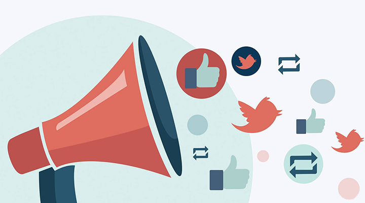

Tidligere Shows
Nuværende Shows
Mandag
Tirsdag
Onsdag
Torsdag
Fredag
En tur med kultur
Samdundsdebatten
Isbjerget
En familie ting

Hashtag mig her, hashtag mig der. Up To Date er programmet, hvor vi vil snakke om de emner som er oppe på de sociale medier. Vi vil interagere med jer via dem, få jeres vinkel med og åbne op for en spændende debat.
Følg med hver mandag kl 17.00 på www.waih.dk, app eller når som helst via podcast. Programmet genudsendes mandag kl 20.00 og tirsdag kl 07.30.
Følg med hver mandag kl 17.00 på www.waih.dk, app eller når som helst via podcast. Programmet genudsendes mandag kl 20.00 og tirsdag kl 07.30.

Normalt kender vi kun meget lidt til mange af de fremtrædende muslimske personligheder, der findes i det danske samfund, på globalt plan, eller nogle af de historiske, mindre omtalte muslimske personligheder. I programmet ”Toppen af isbjerget” dykker værten Abu Karim ned under overfladen, og giver os et dybere indblik i disse personligheders liv og historier.
Følg med hver tirsdag kl 17.00 på www.waih.dk, app eller når som helst via podcast. Programmet genudsendes tirsdag kl 20.00 og onsdag kl 07.30.
Følg med hver tirsdag kl 17.00 på www.waih.dk, app eller når som helst via podcast. Programmet genudsendes tirsdag kl 20.00 og onsdag kl 07.30.

Dansk-muslim, muslimsk dansker… Elsker, elsker ikke, det er spørgsmålet… Kom med Radio WAIHs egen Johannes, som vil tage os på En Tur Med Kultur. Han vil her snakke med sine gæster, om kulturens rolle for muslimerne i Danmark anno 2017.
Følg med hver onsdag kl 17.00 på www.waih.dk, app eller når som helst via podcast. Programmet genudsendes onsdag kl 20.00 og torsdag kl 07.30.
Følg med hver onsdag kl 17.00 på www.waih.dk, app eller når som helst via podcast. Programmet genudsendes onsdag kl 20.00 og torsdag kl 07.30.
Det vi alle snakker om! Ugens emner vil blive taget op i Samfundsdebatten, med vores egne journalister Elias Rama eller Lamies Nasri, sammen med deres spændende udvalg af gæster.
Følg med hver torsdag kl 17.00 på www.waih.dk, app eller når som helst via podcast. Programmet genudsendes fredage kl 22.00 lørdage kl 08.00 og kl 12.00.
Følg med hver torsdag kl 17.00 på www.waih.dk, app eller når som helst via podcast. Programmet genudsendes fredage kl 22.00 lørdage kl 08.00 og kl 12.00.
De akutte og højaktuelle nyheder løber os tit hen over hovedet, overfladisk og kortvarigt. Vi formår sjældent at få føling på substansen i temaerne. Derfor har Apropos påtaget sig opgaven at dykke ned i de nuancer der er, på de kastede informationer, og få redegjort kvalitativt for disse.
Følg med hver fredag kl 17.00 på www.waih.dk, app eller når som helst via podcast. Programmet genudsendes fredag kl 20.00 og lørdag kl 07.30.
Følg med hver fredag kl 17.00 på www.waih.dk, app eller når som helst via podcast. Programmet genudsendes fredag kl 20.00 og lørdag kl 07.30.

Dansk-muslim, muslimsk dansker… Elsker, elsker ikke, det er spørgsmålet… Kom med Radio WAIHs egen Johannes, som vil tage os på En Tur Med Kultur. Han vil her snakke med sine gæster, om kulturens rolle for muslimerne i Danmark anno 2017.
Følg med hver onsdag kl 17.00 på www.waih.dk, app eller når som helst via podcast. Programmet genudsendes onsdag kl 20.00 og torsdag kl 07.30.
Følg med hver onsdag kl 17.00 på www.waih.dk, app eller når som helst via podcast. Programmet genudsendes onsdag kl 20.00 og torsdag kl 07.30.

En dag skal du finde dig en partner, en anden skal du danne familie og en tredje skal du dø. Vi gennemgår alle, flere af livets forskellige facer. Med programmet En Familie Ting, vil du få de bedste råd og vejledning, med vores vært Haisam og hans udvalg af erfarne gæster.
Følg med hver søndag kl 17.00 på www.waih.dk, app eller når som helst via podcast. Programmet genudsendes mandage kl 22.00 tirsdage kl 08.00 og kl 12.00.
Følg med hver søndag kl 17.00 på www.waih.dk, app eller når som helst via podcast. Programmet genudsendes mandage kl 22.00 tirsdage kl 08.00 og kl 12.00.